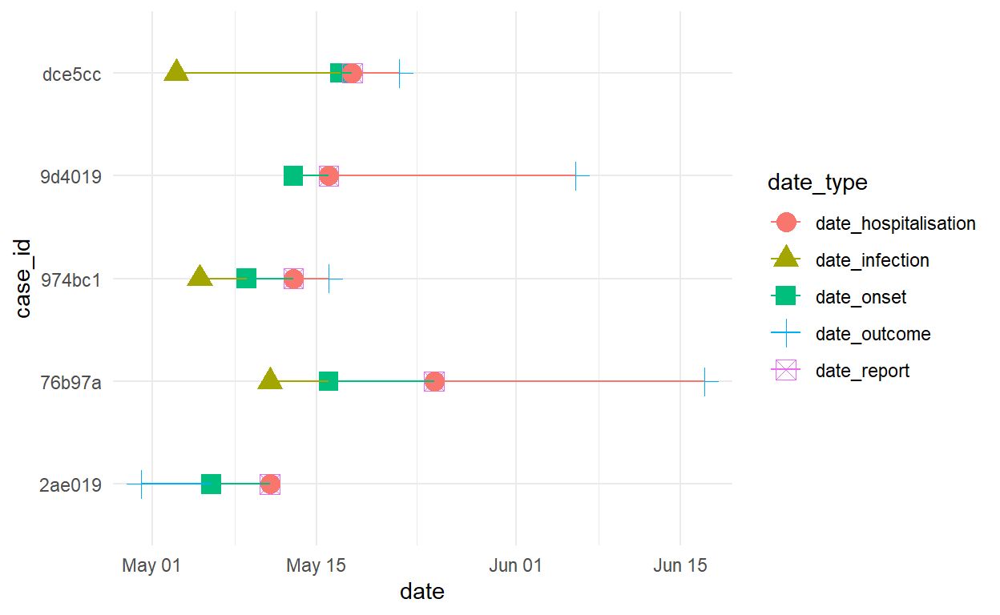
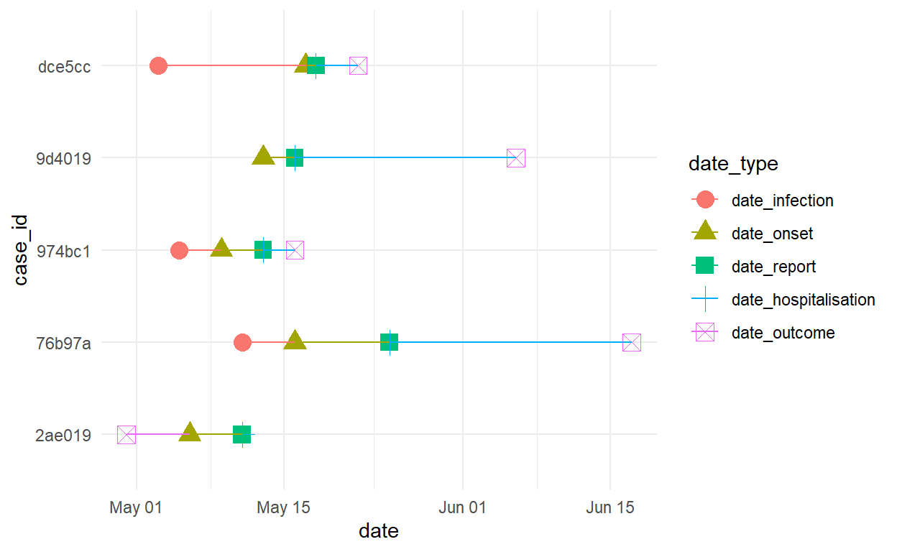
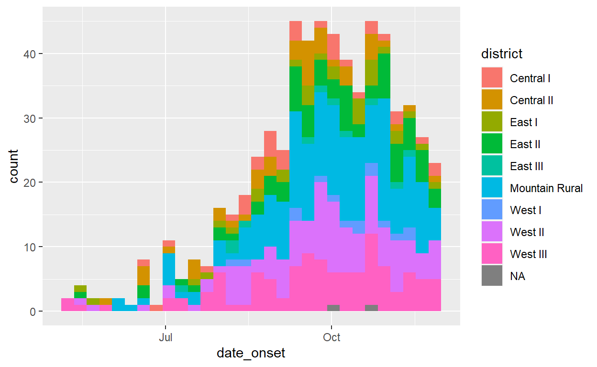
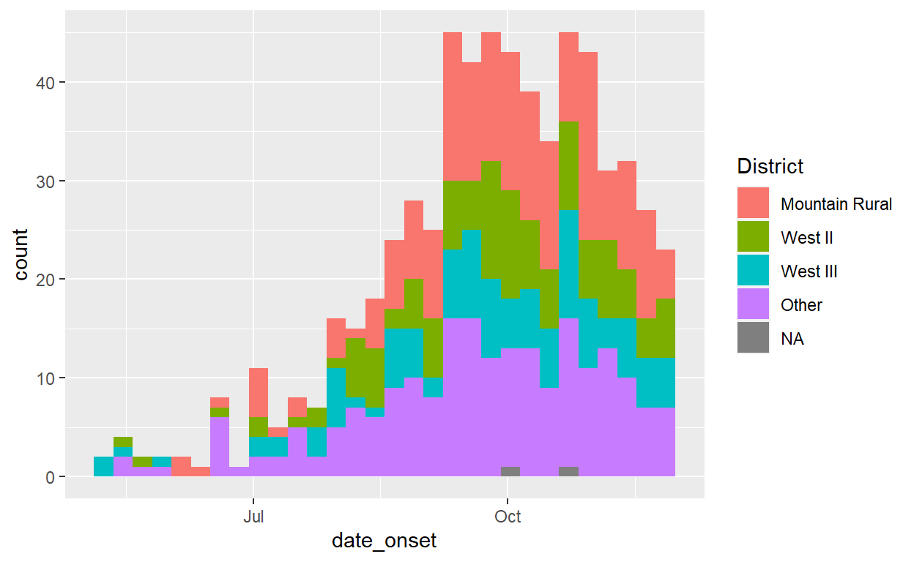

Introduction to R for Applied Epidemiology and Public Health
Welcome
Welcome to the live course “Introduction to R for applied epidemiologists”, offered by Applied Epi - a nonprofit organisation that offers open-source tools, training, and support to frontline public health practitioners.

Pivoting data
This exercise focuses on pivoting columns within data frames from wide-to-long, and introduces the column class “factor”.
Format
This exercise will guide you through a set of tasks.
You should perform these tasks in RStudio and on your local
computer.
Getting Help
There are several ways to get help:
- Look for the “helpers” (see below)
- Ask your live course instructor/facilitator for help
- Ask a colleague or other participant in the course for tips
- Post a question in Applied Epi Community in the category for questions about Applied Epi Training
Here is what those “helpers” will look like:
Click to read a hint
Here you will see a helpful hint!
Click to see a solution (try it yourself first!)
linelist %>%
filter(
age > 25,
district == "Bolo"
)Here is more explanation about why the solution works.
Quiz questions
Please complete the quiz questions that you encounter throughout the tutorial. Answering will help you to comprehend the material, and will also help us to improve the exercises for future students.
To practice, please answer the following questions:
Icons
You will see these icons throughout the exercises:
| Icon | Meaning |
|---|---|
| Observe | |
| Alert! | |
| An informative note | |
| Time for you to code! | |
| Change to another window | |
| Remember this for later |
Learning objectives
In this exercise you will:
- Practice pivoting a dataset from wide to long
- See the class “factor” applied to provide order to a columns values
Code from this exercise can be added into your R script, if you want. The code from this exercise is not vital to future exercises. If you are tired, you can simply read through the exercise and absorb the material.
Preparation
This exercise uses the combined data frame that was
created in the previous exercise on “Joining data”. If you did not
complete the exercise, or are seeing errors when trying to use
combined, you can import a “backup” combined
data frame in the “data/clean/backup/” folder using this command:
combined <- import(here("data", "clean", "backup", "linelist_combined_20141201.rds"))New section heading
Add a new section heading in your script called “Pivoting - patient timelines”.
The new header should look something like this:
# Pivoting - patient timelines ----------------------------------------Pivoting to plot patient timelines
Now that we have joined all the datasets joined together in
combined, we have a more complete picture of each patient’s
movement through the health system. We have information on
date_infection, date_onset,
date_report, date_hospitalization, and
date_outcome.
Let’s create a small data frame to examine the timelines of 5 patients.
Here is what the end result will look like:

Above, we have the timelines of 5 cases displayed in detail, each on their own row. For each case, their milestone dates are visualized by points of varying color and shape.
Let’s build this together, and along the way learn about pivoting longer and about factors.
Select cases
First, let’s reduce the dataset to the following:
- Sort the dataset so the cases with earliest onset are the top
- Filter to only the top 5 rows
- Select only the columns
case_idand any column that begins with “date”
timelines <- combined %>%
arrange(date_onset) %>% # sort dataset so that earliest are at the top
head(5) %>% # keep only the top 5 rows
select(case_id, starts_with("date")) # keep only certain columns Thankfully we can use the “tidyselect” helper function
starts_with() to refer to all of the date columns at
once.
Let’s look at this new dataset:
timelinesAs you know, ggplot() with geom_point()
will ask for column names to use for mapping to the axes
(x = and y =).
Pivot longer
To use this dataset in ggplot() we need to transform or
“pivot” the columns into “long” format. This will result in a dataset
with only 3 columns:
case_id
date_type(a new column with values like “date_infection” and “date_report” - the current column names)
date(the actual date values, all in one column)
To do this, we will use pivot_longer() to collect all of
the date columns and pivot their values into just those two new columns
(date_type and date).
At it’s most minimal, the function needs only the following argument:
cols =(this is a vector of the columns to pivot in this case, the date columns)
Thankfully, we can reference all the “date” columns with the helper
starts_with("date"). In other circumstances you might list
them within a vector c().
# Pivot dates longer
timelines_long <- timelines %>%
pivot_longer(cols = starts_with("date"))See what this new dataset looks like, below:
timelines_longNotice the following things:
- The function has taken all the date column names and placed
them in a new column called “
name”. These are now character values.
- It has also taken all the date values and placed them in a
new column called “
values”.
- There are now 5 rows for each
case_id- once for each possible date.
If you want, you can re-run the pivoting command and add these arguments, which allow you to change these default names for the two new columns:
names_to =(try “date_type”)
values_to =(try “date”)
# Pivot dates longer
timelines_long <- timelines %>%
pivot_longer(
cols = starts_with("date"),
names_to = "date_type",
values_to = "date")timelines_longPlotting
What happens if we make the ggplot right now, using the dataset
timelines_long?
ggplot(data = timelines_long, # use the long dataset
mapping = aes(
x = date, # dates of all types displayed along the x-axis
y = case_id, # case_id are discrete, character values
color = date_type, # color of the points
shape = date_type, # shape of the points
group = case_id))+ # this makes the lines appear by color
geom_point(size = 4)+ # show points
geom_line()+ # show lines
theme_minimal()
The points and lines are there, but are they in a sensible order in the legend?
Factors
If a variable has an inherent order, we might call it an “ordinal” variable. Think if the values in a column were “first”, “second”, or “third”. We would want them to appear in a plot in a specific order.
In R, these types of variables should be converted to the class “factor”. A factor has “levels”, such that the values are ordered (first, second, third, fourth, etc.).
In this case, the expected ordering would be:
- “date_infection”
- “date_onset”
- “date_report”
- “date_hospitalisation”
- “date_outcome”
Of course for some patients there may be hospitalised before they are reported, but generally let’s say that this is the order that we want to embed in the variable.
What is the current class of date_type?
class(timelines_long$date_type)## [1] "character"It is not a factor. The character values have no inherent ordering. By default they will appear alphabetically.
We can change this using fct_relevel() from the
{forcats} package. This functions converts the column to class “factor”
and gives you the opportunity to set the desired order.
Below, we add a mutate() step to the pipe chain that
re-defines this new column, and then lists the values in the order we
want.
# Pivot dates longer
timelines_long <- timelines %>%
# pivot the dataset longer
pivot_longer(
cols = starts_with("date"),
names_to = "date_type",
values_to = "date") %>%
# set the new column date_type as class factor, and define order for its values
mutate(date_type = fct_relevel(date_type, "date_infection", "date_onset", "date_report", "date_hospitalisation", "date_outcome"))The class is now “factor”
class(timelines_long$date_type)## [1] "factor"And it has “levels”
levels(timelines_long$date_type)## [1] "date_infection" "date_onset" "date_report"
## [4] "date_hospitalisation" "date_outcome"After re-running the chain above (with the mutate), we try the ggplot again - see how the ordering has changed (look at the legend):
timelines_long %>%
ggplot(data = timelines_long,
mapping = aes(
x = date,
y = case_id,
color = date_type,
shape = date_type,
group = case_id))+
geom_point(size = 4)+
geom_line()+
theme_minimal()
There are many other {forcats} functions to handle factors, see this chapter of the Epi R Handbook.
fct_lump()
One {forcats} function that is worth showing you is
fct_lump(). This function will aggregate together values in
a column into an “Other” category based on frequency.
See this epidemic curve - because the column district is
assigned to the aesthetic fill =, it shows every
district in the legend. This is quite overwhelming and difficult to
interpret!
ggplot(data = combined,
mapping = aes(
x = date_onset,
fill = district))+
geom_histogram(binwidth = 7)
We can use fct_lump() and its variations like
fct_lump_n() to reduce the number of district that are
shown in the plot:
fct_lump_n()shows only the top “n” values (by counts), with all remaining put in “Other”
fct_lump_prop()shows only those that exceed n proportion of rows, with all remaining in “Other”- There are other variations that you can see in the R documentation
Below, we wrap district within
fct_lump_n() and specify that we want to keep only the 3
most-common districts.
ggplot(data = combined,
mapping = aes(
x = date_onset,
fill = fct_lump_n(district, 3)))+
geom_histogram(binwidth = 7)+
labs(fill = "District")
Note that applying this function here within the
ggplot() does not change the underlying
district data. The data are lumped only for this plot. If
you want to lump the underlying data you can do that with
mutate() in a cleaning pipe.
Pivoting wider
We will not focus on pivoting wider in this exercise, as it is less common. However, know that if you need to pivot data wider you can find good examples in these two chapters of the Epi R Handbook:
End
Congratulations! You are done with this exercise. You have made case timelines, have practiced pivoting data longer, and using some functions to handle factors!